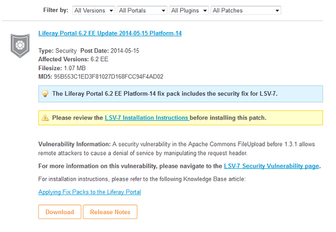

LESA - Customer Portal - Liferay Portal
Prerequisites:
Description:
This test is designed to have users verify the basic functionality of customer portal. Users will verify specific links for downloading Liferay Portal are valid. Users will download fix packs, patching tool, and security updates.
Road Map:
- Sign In As Liferay CSE
- Assert Documentation
- Assert Patching Tool
Test Steps:
- Navigate to http://www-uat.liferay.com
- Click the Main Menu drop down
- Click Customer Portal
- Assert that the Liferay Portal icon displays
- Assert that the Social Office icon displays
- Assert that the Liferay Sync icon displays
- Assert that the Liferay Faces icon displays
- Assert that the Developer Studio icon displays
- Assert that the Mobile SDK icon displays
- Assert that the Liferay Portal 6.2 box displays
- Assert that the Liferay Portal 6.1 box displays
- Assert that the Liferay Portal 6.0 box displays
- Assert that the Liferay Portal 5.2 box displays
- Assert that the Top Articles section displays in the bottom left
- Assert that the Top Downloads section displays in the bottom middle
- Assert that the Latest News section displays in the bottom right
- Click Liferay Portal
- Assert that the latest version of Liferay Portal displays at the top
- Assert that the downloads drop down display
- Assert that the Download EE (latest version) displays
- Assert that the Archive link displays
- Assert that the Additional Files link displays
- Assert that the Support Matrix box displays
- Assert that the Support Information box displays
- Assert that the Deployment Checklist box displays
- Assert that the License Key box displays
- Assert that the Knowledge Base Box displays
- Assert that the Documentation box displays
- Assert that the Patching Tool box displays
- Assert that the Security Patches box displays
- Assert that the Patches box displays
- Click Find Answer in the Knowledge Base box
- Assert the "Welcome to the Knowledge Base" message displays
- Assert the Search field displays
- Click Back in the browser
Assert Documentation
- Click Learn More in the Documentation box
- Assert that the User Guide is available for download
- Assert that the Developer Guide is available for download
- Assert that Release Notes are available for download
- Click Back in the browser
Assert Patching Tool
- Click Download in the Patching Tool box
- Assert that the latest patching tool is downloaded
- Click Learn More in the Security Patches box
- Assert that the latest LSV fixes are available for download
- Click Learn More for the latest LSV
- Click the Download button
- Follow the additional prompts since LSVs are included in Platform fix packs

- Click the Main Menu drop down
- Click Customer Portal
- Click Liferay Portal
- Click Download all Patches in the Patches box
- Assert that the latest fix packs are downloaded
- Click the Administration 4 Release Notes link
- Assert the Release Notes title displays
- Assert that Change Log displays